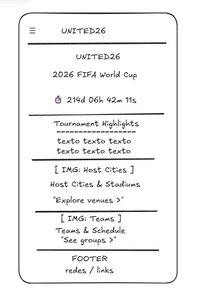
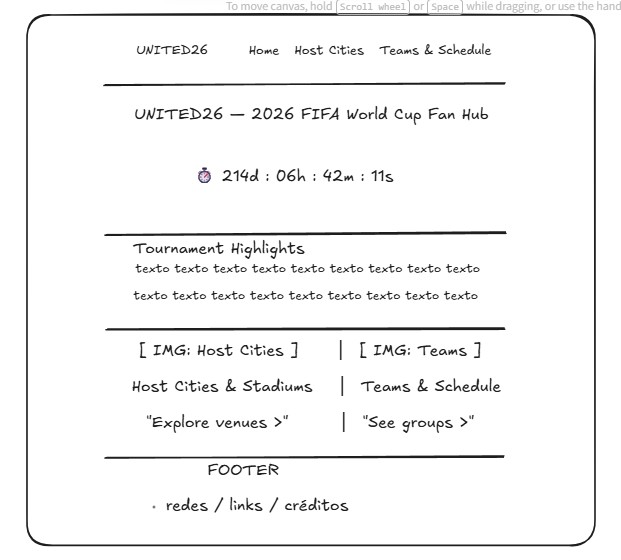

01 — Site Name
United26
Optional domain: united26.com
The name fuses United — a nod to the three co-host nations sharing a single tournament — with 26, the tournament year. It is short, easy to say out loud, and works equally well as a spoken brand, a logo mark, and a URL. It also avoids tying the site to any one country’s language or flag, which fits a guide meant to serve fans in the US, Mexico, and Canada alike.
02 — Site Purpose
Site Purpose
United26 is a general information hub for soccer fans following the 2026 FIFA World Cup. The site brings together the essentials fans need in one place: an overview of the tournament with key dates and highlights, a guide to the host cities and stadiums across all three countries, and a look at the participating teams, groups, and match schedule. Dynamic content — including a live countdown to kickoff and data pulled from a remote API such as team rankings, match schedules, or host‑city weather — keeps the information current as the tournament approaches.
03 — Scenarios
Scenarios
Questions a visitor — a fan planning to follow or attend the tournament — might bring to the site:
-
Q
Which stadium is hosting matches near me, and which teams are playing there?
-
Q
When does my national team play in the group stage, and who are their opponents?
-
Q
What’s the weather likely to be like in a host city around my team’s match dates?
04 — Color Scheme
Color Scheme
The palette is drawn from the match itself rather than from any one country’s flag: pitch green, chalk lines, floodlight white, and the gold of the trophy, with a touchline red reserved for small accents.
-
Pitch Green
#0B3D2EHeader, footer, and section backgrounds -
Ink Navy
#121F3BBody text and headings on light backgrounds -
Chalk White
#F7F5F0Main page background and text on dark backgrounds -
Goal Gold
#D4A017Links, headings accents, eyebrow labels, borders -
Touchline Red
#C8102ESmall accents only — the Q tags in Scenarios above
05 — Typography
Typography
-
Display — Bebas Neue
United26
Page title and section headings (h1–h2) -
Body — Inter
Follow every host city, every stadium, every match.
Paragraphs, list text, and navigation -
Utility — Space Mono
01 — KICKOFF IN 214:06:42:11
Eyebrow labels, the countdown timer, and stat/data callouts
06 — Wireframe
Wireframe
Hand-drawn sketches of the home page layout for small and large viewports.

